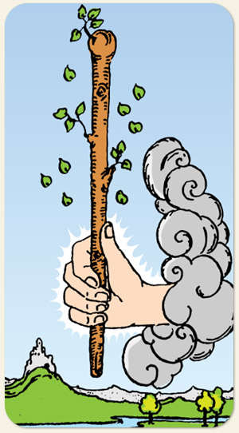

A centelha inicial, a explosão de energia e o potencial criativo bruto. Representa o ápice do elemento Fogo, indicando o surgimento de uma nova paixão, um impulso de vontade ou uma ideia inspiradora. É a carta da iniciativa, da coragem e do poder de ação, marcando uma fase de entusiasmo, novos começos dinâmicos e a força necessária para tirar projetos do papel.
O início da faísca, dois elementos Yang, a fome e a vontade de comer, é algo que explode na nossa frente, é o tesão. O naipe de paus aparece com folhagens porque não é uma madeira morta. O fogo precisa de combustível, é um naipe faminto.
Positivo: Fazer agora não deixar o fogo apagar, dar um gás para ver se a coisa anda. É um momento onde, se a pessoa fizer algo, tomar uma atitude, a coisa anda. Mostrar o pau, ter coragem de enfrentar desafios, movimentar-se, dar um start, é o agora vai.
Negativo: Estar afoito, ser ansioso, queimar as fichas, queimar a largada, falta de paciência, pressa, ansiedade, não saber chegar no sapatinho, ser explosivo, falta de combustível, falta da bravura do fogo, o negativo da bravura ou o excesso de medo.
Símbolos: Número 8, A Mão saindo da nuvem, Castelo, Rio, Árvore, Céu Límpido.
Cores: Laranjado, Azul, Verde, Roxo, Branco, Cinza.